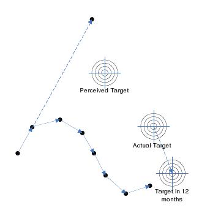

Iterative Development Process
Iterative development is a fundamental part of an agile approach to software development. There is a vast quantity of discussion and literature about the benefits of adopting an agile approach and we won’t go into all the detail here, but it is worth noting the following points: -
- Iterative development differs from the traditional waterfall model by breaking the development into many small iterations of two to three weeks.
- Each iteration includes the planning, design, implementation and testing for a small achievable set of user requirements.
- The output of each iteration is measured against the customer’s expectations and feeds into the next iteration so that the process is always correcting towards the goal.
- The end goal (actual target) is often poorly understood at the outset. There are many reasons for this including that there is a difference between what the customer thinks they need and what they actually need, the team lacks the field knowledge to define the solution or the there is a much more elegant solution / product to compared with what is initially proposed.
- The target moves. Environmental factors such as changing market conditions, new technology innovations and changing business requirements mean that the final product will be different from what was envisaged at the outset. This means that even if the product agreed on at the outset were delivered perfectly to specification, it would be inadequate.
- Avoids late design breakage. With the waterfall model, feedback is only received late in the software development process after the requirements and design have been ‘cast in stone’ and implemented. This means that mistakes that would have been found and fixed early in the project are only found late on which means that the cost of rectifying the problem is a lot higher.
- Tackle the highest risk items first. This not only mitigates the cost of the project by qualifying out infeasible projects early in the development process, but also means that most of the learning is done as early as possible, benefitting the later stages of development.
- Working software delivered at the end of each iteration. By never straying far from working software, it means that you are always ready to ship if required.

The image opposite depicts the benefits of the adopting an iterative development model and demonstrates some of the points from above (regularly correcting towards the actual target, the difference between perceived and actual target and the fact that the target is moving).
We follow a development process that is similar to the one described at http://www.extremeprogramming.org/rules/iterative.html, with a few of our own customizations and modifications. Our development process is broken into three layers: -
- The product development cycle
- The iteration cycle
- The daily development cycle
Please see the document ‘Adaptive Development Software Model’ for an in-depth description of our software development model.
Working Software
We have found that the best way to get regular feedback from the customer is to provide them with working software regularly throughout the development effort. Therefore, we attempt to provide the customer with working software as early as possible in the development effort and then release working updates at the end of each iteration cycle. We have found that this is more effective than just having regular meetings or conference calls with the customer, since having the customer actually use the software helps the customer discover their own requirements and priorities. Deploying working software also helps with finding hidden requirements and constraints. For example, when deploying the first version of a distributed multi-user system, specific performance or security requirements might be discovered that were not originally considered.
One common stumbling block is what is acceptable as ‘working software’. We have experienced working with a team that believed they were developing in agile iterations, but the output from each iteration was something that could be used as a demonstration on a developer’s desktop but definitely couldn’t be provided to a customer. To be ‘working software’, the software must be useful, usable, and bug-free. A good way to define ‘working software’ is to actually deploy it to a customer site, and if they either start complaining or stop using the software then it isn’t ‘working software’!
One difficultly we have encountered on a number of occasions is clients that cannot deploy early versions of the software. This could be because they need the full feature set before they can upgrade their employees from the old system, or a limited working system would have no value to them or their customers. In these cases, we have found it useful to really question and understand the exact reasons for the resistance and to try to find workable solutions. For example, when deploying a new call-center system, maybe the customer can accept having a couple of agents taking calls on the new system even though it does not have a complete feature set. Alternatively, it is worth trying to find other alpha or beta customers that can use a limited version of the software. It is often possible to find internal uses for the software too, even if it is a creative use of the new system. In general, we do like to eat our own dog-food.
Delivering working software early and regularly gives our clients the competitive advantage of business agility. This allows clients to respond quickly to changing market conditions and competitor actions. For example, imagine that you are developing a new software product that you expect will take 12 – 18 months to develop, and halfway through the development there is a business reason that makes it advantageous to ship the product next week. With an agile development approach, since you have already been delivering useful, stable, bug-free versions of your software to your alpha customers, this is the software you can ship next week. With a traditional development approach, you do not get this business agility.
Automatic Testing
We have found that there is a significant benefit in automating as much testing as possible. Most automated tests can be run after every integration and build, and all of the tests can be run at least once a night.
We believe that automated testing can apply to all types of testing. Make sure that there is a good spread (depending on the project type) between the following tests:
- Automated integration and acceptance tests: These tests should map to the user stories (i.e. the original requirements) and therefore verify that we have built the software to satisfy the requirements. Generally these tests follow these three steps: -
- Provide input to product.
- Receive output from product.
- Validate that the output is correct.
- Automated unit tests: These tests validate that a smaller part of the system (e.g. a class or component) is working as expected. These tests should run as part of the nightly build. These tests are important since they verify that each cog in the system is robust. Due to the reduced scope, it is much easier to track down a bug in the unit test than it is to track down a bug in an integration or stress test.
- Automated stress tests: These tests are important because they greatly improve the overall quality and robustness of the product. These tests should run as part of the nightly build. Stress tests stress the system with random and chaotic behaviour and the measure of success is that the system does not crash and it is in a sane state at the end of the test. To automatically determine if the system is in a sane state, the system needs to be designed with a run-time diagnostic checks (see Run-time Diagnostic Tools) so that the test system can check the state of the system upon the completion of the stress testing. Due to the random nature of stress testing it is often difficult to reproduce a problem and therefore more difficult to track down bugs that occur during stress testing. Therefore, we use logging and other diagnostic tools to track down bugs found by these tests.
Even though we attempt to automate the majority of our system testing, there is still a need for manual testing. Manual tests are commonly tests that are very difficult to automate or tests that are done by a human tester to provide the real-life human testing and verification. Since these tests are not automated they are done at the end of the iteration rather than nightly. Also, it requires a human resource to run these tests, which means increased cost, diversity between test runs and room for human error. A good reason for a manual test is as a sanity check before the product is sent to a customer. It is possible that the automated test system missed something critical that would show up very early on in using the product. Having a human open up the software and do a 5 minute sanity check before shipping to the customer avoids those embarrassing questions, such as ‘Did you even try opening up the start screen before shipping?’
Continuous Testing
Testing is a crucial part of any development project. It used to be an afterthought in the waterfall development process and completed as a final quality-check step. Now it is an integral part of the Software Development Life Cycle (SDLC).
Our rules for testing are: -
- Testing is not a one-off process and there are no easy shortcuts. Often, there is a ‘quality panic’ with a buggy product that has been developed over several months / years. The product is falling over every couple of minutes on-site and suddenly there is a strong push to do a big testing effort to add quality. Everyone stops what they are doing and spends a week writing tests and within a week, a number of tests are added. Everyone feels great and then returns to the status quo of adding code without testing. A far better approach is to develop a practice of identifying critical areas and making sure that they are well covered and to make sure that adding a test for each new feature is a part of the development process. This will mean that quality will continue to improve into the future. Having said that, there is nothing wrong with a big testing effort, it is just that an ongoing culture of testing is more important than a one-off testing sprint.
- Test extensively. The more coverage that the testing has the more quality the product will have. The best way to ensure test coverage is to add a test for each feature as the feature is being developed. It is a lot easier to add tests from the beginning of a product than as a big push at the end. Profiling tools can provide some measure of coverage, however bear in mind that there is more to good code coverage than a high score on a code-coverage profiler. Good code coverage also means testing different values for parameters and testing different paths which touch the same piece of code. Profiling tools are only one indication of the efficacy of a test suite. It is often better to test a critical method with multiple different parameter values than it is to test an obscure and seldom used method simply to increase a profiler score.
- Test first / test early. Each new feature requires a test. Sometimes it is not feasible or sensible to write the test before implementing the feature, but as a rule, we do not check in a new feature unless it has a regression / unit test. We have found that when developing a new feature, splitting the development of the tests and the development of the feature between two developers works well. The test software is then created in parallel with the feature and any incorrupt assumptions made in the development are less likely to be replicated in the test software.
- Decide on a test-development balance. This will vary depending on what is being built, for example if we are building a Mars rover then we would allocate more time to testing than if we were building a search utility for an internal intranet. A good rule of thumb is to spend a minimum of 50% of the time on testing and 50% of the time on development. As the testing falls below 50%, the quality of the product can degrade significantly.
- Don’t be a test tyrant. It is easy to get carried away with test coverage and the number of tests. The focus for testing is to provide a stable system that meets the customer requirements, i.e. brings the customer joy. Adding meaningless tests just to make test reports look good doesn’t help. Sometimes it is better to only implement a regression test, sometimes a unit test will do, and sometimes the functionality can only be tested manually. In some cases the test will have to be delayed while the requirements, design and code are nutted out.
- We assume that if something is not tested, it is broken.
- When a new bug is found: -
- Add a new test and make sure that it reproduces the bug.
- Fix the bug.
- Run the test and make sure that the test now passes.
- Don’t release software where tests are failing. The arguments you hear for releasing software with known defects are: ‘That is an unimportant test’, ‘it is a known bug that won’t affect anyone’, ‘that is a bad test’. There are several reasons why software should not be released when tests are failing:-
- It becomes OK to release software with failing tests. 3 failing tests becomes 5 failing tests, which becomes 10 failing tests and before long it is hard to determine which tests are known failures and which are critical bugs and everyone loses confidence in the product and test software.
- The failing tests are never fixed.
- The released software does not meet the customer requirements. Each regression test should test a scenario that matches a customer requirement. If the test case is truly unimportant or minor then it should be removed along with the customer requirement and added for the next release.
Using continuous integration with nightly automated tests, there is little justification for releasing software while tests are failing. You should always be close to a working build since one the rules of test-first is that tests are run nightly and failing tests are fixed before new features are implemented. So you should never get into the situation where software needs to be released while there are failing tests since you are always one day away from a working build. If the software absolutely has to be released while tests are failing (bearing in mind that this indicates a failing in your process that should be addressed), then make sure that:-
- The customer is fully informed about the failing tests and the implications. Often the pressure to get the software out is due to internal pressures (such as employee bonus schemes and commitments made by management) rather than being customer-driven. If the customer would rather wait until a stable build is available then there is no reason to give them the buggy product.
- All other stakeholders are informed.
- Remove the tests and the user stories or tasks that the tests are related to and add them back in for the following iteration.
Continuous Integration
Continuous integration means that source code is checked into the source control regularly (often several times during the day). Avoid source code on developer machines from getting out of date with the code in the repository. This results in difficult merges that are likely to introduce bugs.
Automated builds should be done after each check-in or group of check-ins. These are clean builds (i.e. source code is checked out and built from scratch – there are no intermediate object or project files left lying before the build). The build machine should be reserved just for building the source code. The only way to get a build for a customer site is through the build machine. A build from a developer machine should never be deployed a customer site since developer machines are often riddled with non-uniform libraries and dependencies. The product that is run at the customer site should always be built by the formal build.
Nightly builds should be run to make sure that the source code builds and all tests pass.
If a build fails due to a compilation error or a failed test, it should be fixed as a high priority. This is generally done by the person who broke the build. We have experimented with having the person who broke the build wear a funny hat, until they successfully fix the build. Regardless of the approach, we have always tried to foster a culture where a broken build is given top priority.
Each build should be versioned and the source tree should be tagged so that it is possible to go back to the source code for any build. The final product is archived, along with any intermediate files such as map and debug files that are useful for resolving bugs.
Fix Bugs First
We track down, reproduce, and fix bugs before working on any new development. If a bug is found, this should take priority over any new feature development. Delivering ‘Working Software’ early and often is only effective if bugs found are quickly resolved and if the customer is able to continue to use the software.
Tracking down and resolving bugs can be difficult and frustrating, while researching and implementing new features is often interesting and satisfying. So putting this tenet into practice often requires a lot of self-discipline and persuasive powers over contributing developers.
Fix failing tests before implementing new features. Fixing tests that are failing is often not as enjoyable as writing new features, however if new code is added before fixing failing tests: -
- It is more difficult to write new code when you don’t have confidence in the existing code base or you keep running into bugs.
- The new code may need to work-around existing bugs this means that when the bugs are fixed the new code will break.
- The time it takes to fix a bug increases exponentially from the time that it was put into the software.
- Failing tests go rotten over time. The longer that tests are left unfixed the harder it becomes to fix them as the knowledge of that part of the code diminishes.
- Existing (known) failing tests hide new failing tests. Do not check-in code that you know will break tests or add new tests that you know will fail. Very often you will hear ‘Yes, we know about those tests, we expect them to fail’. This approach will introduce ambiguity as to which tests are expected to fail and it becomes an easy cop-out to say that a test is ‘expected to fail’ rather than fixing the test. Soon critical test failures are masked by known test failures and the effectiveness of the test suite is greatly diminished.
Failing tests mean that the build is broken. Do not consider a failing test any differently from a bug that causes the compiler to fail. A failing test indicates that the build is broken and should be fixed before any further development is done on the code.
Time Constraint
Any project has three main dimensions: time, cost, and scope. Since we do not have the luxury of unlimited time and money, we must trade-off project scope against time and cost. In project management this concept is referred to as the ‘Project Management Triangle’ where each side of the triangle represents one of the three dimensions. We cannot change one side of the triangle without changing another side. For example, if we want to reduce the time of delivery, we must either decrease the project scope or increase the project cost.
We can choose to fix the value of one or two of the project dimensions, but we can never fix all three dimensions since unforeseen events will always affect the triangle in some way. For example, we could choose to fix both the time and scope dimension, with the consequence being that unforeseen events will affect the project cost.
A traditional software development approach involves gathering all requirements before commensing the project and then fixing the project scope dimension. The developers design a system that satisfies all of the requirements within scope and they begin development. If new requirements are found during development, or schedules slip due to unforeseen difficulties, then since the scope is fixed either the time or cost dimension are affected. These software projects are often delivered late (time dimension) and/or over-budget (cost dimension).
The problem with the traditional approach is that time and cost are often critical, while a lot of the scope is not. It is common for a lot of the requirements in scope to be nice-to-have features rather than critical requirements. The agile approach is different from the traditional approach in that scope is not fixed at the beginning of the project. Instead the project is developed in time-fixed iterations. By choosing the highest priority features first, and delivering working software early, any of the project dimensions can be altered if need be. And when given a choice, it is often the scope dimension that clients are happy to relax rather than time and cost. By implementing just enough to deliver the highest priority features first, clients always have an option of a working system delivered on-time and on-budget.
This approach of developing using time-fixed iterations is referred to as time-boxing. The time dimension is fixed in each iteration and is never allowed to slip.
The Speculating Game
The ‘Speculating Game’ is our approach to requirements gathering and prioritising the requirements for the future releases. The Extreme-Programming methodology introduced this approach in what they call the ‘Planning Game’, which involves the customer and the developers selecting the user-stories for development in the next release. We follow this practice, but we think the word Speculating’ is more apt than the word ‘Planning’. In any complex software development project, there are many sources of unknowns from how the different technologies used work and their constraints, to what the customer actually wants and how they will actually use the software, to changes in the marketplace that make certain objectives superfluous. With all these unknowns we realise that with the gathering and estimating of requirements, we’re really just speculating, with the speculation becoming more and more error prone the further out it is. So we call it the ‘Speculating Game’, which helps keep us focused on the purpose of the game: to flesh out and priortise the most immediate work.
One advantage of requiring the customer to select a limited number of user-stories for the next release is that it helps resolve the ‘children in a candy store’ problem. Any parent will sympathize with the notion that children in a candy store want to choose everything they can see, but when the child is constrained to only two or three choices they then learn that they need to prioritise and only choose what they really want. The same occurs with software system requirements and the ‘Speculating Game’ forces the client or product manager to prioritise and select only the most important features for the next iteration.
An additional benefit that we have found is focus. If you have a large number of requirements, it is easy to waste time spinning and readdressing different options and design choices. By having a process that chooses just the requirements for the next iteration, all of the other requirements are put out of mind.
The ‘Speculating Game’ requires the engineers to estimate each user-story. To get the best understanding of the user-story possible, we have found an effective technique is to get each developer to consider the user-story and then secretly write down the effort required. Once done, everyone shows their estimate at the same time. Often the engineers’ estimates are approximately the same which reassures everyone that the estimate is appropriate. Often though there are one or two estimates that wildly diverge from the others. This then starts the conversation of “Wow, why so much effort?” or “Wow, why so little?”. The following conversation is often enlightening as to complexity that hadn’t been considered by everyone, a simpler approach that only one engineer thought of, or an ambiguous user-story. In summary, this estimation approach helps kick off discussion about what is involved in the user-story and creates both better estimates and better plans.
We have even applied this approach to our own internal business planning. It is the same problem: many things we would like to do but only a limited amount of time to allocate to them. So we created user-stories such as “Add a blog to the web-site”, “Install a VPN server for remote access”, “Attend the XYZ trade-show”, and “Implement an automated time tracking and invoicing system”. This turned into a formidable stack of requirements for our business. We then estimated the number of days effort for each user-story and every two weeks selected just the very top priority user-stories to complete that cycle. Using this approach forced us to correctly prioritize, and then focus on just the selected user-stories while keeping the other ideas out of mind.
Effective Customer Support
It is great fun to negotiate, design and develop a product, but nobody is particularly keen on supporting and maintaining the product once it has gone out of the door. We believe that effective customer support is a critical and difficult part of any software development process and requires the input of the most skilled developers. Specifically, when a customer reports an issue: -
- The customer should receive a response immediately from a real person to indicate that there issue has been received and is being looked into.
- The response should be followed up within a day or two (ideally this should occur immediately since priority should be given to customer support over new development) by a developer who was responsible for that part of the product. The developer should provide an explanation of why the problem might have occurred and should give an estimate of when the problem will be fixed (if possible).
- Ideally, the customer should be able to track the progress of the issue, e.g. through a public issue tracking system.
- The customer should be involved in testing the fix as soon as it is available.
Support tools that capture the customer information are a great help to developers for tracking down and fixing customer problems. An example of such a utility collates application logs and the applicable configuration settings from the customer environment to a single zip file.
Customer Immersion
We believe that customer involvement should go beyond having the customer involved in gathering and prioritising the requirements and giving us feedback. It really helps if the developers can learn the customer’s language and really understand who will use the software and how it will be used.
One of our biggest contracts was to Amcat, a US based firm that developed a very powerful contact center application. Every time we went across to the US to visit them, they ensured that we’d have an opportunity to visit one of the call-centers that was using the software. It was often a customer having issues with the software and we’d be based on-site for a week or so assisting in troubleshooting and resolving their issue, or it was a beta customer who was trialing the latest release of the software. Solving the issue and making the customer happy was a valuable experience. But over the long term what was more valuable was that every developer understood the industry. We understood what it was like to be a call-center manager, the level of computer skills that a call-center operator had, and how the software was actually used by these different users. The users of the software weren’t abstract concepts. We truly understood the realities of the industry that the software was sold to.
Therefore we go beyond customer involvement. While there is some benefit for the customer to be present at the development site so that they see the work environment first hand, meet the developers and provide direct input, it is more important that the developers go to the customer. Developers should spend time working from the customer’s premises. They should be encouraged to be in frequent contact with customers, and with the customer’s customers. The developers should see what makes the customers successful and happy and what brings them pain. To make software that really solves customer issues, we believe we need customer immersion.
This also solves a tricky problem with developing a product in a customer-focused or interactive manner; the customer often doesn’t have time to spend at the development site. Having the customer or someone from the customer present during development is a real cost to the customer in terms of resources, travel and time. By shifting the focus to having a developer at the customer site, the customer is disrupted as little as possible from their normal work flow. In fact, it is often an asset to the customer to have a developer who knows the software and industry on site. In our experience, the customer is normally rather sad to see the developer leave (blocking the exit with padded mattrasses kind of sad).
Keep It Simple
Despite sounding obvious, ‘Keep It Simple’ is surprisingly difficult in practice. Software is extremely malleable and can achieve almost any outcome, which allows us all to come up with extremely clever ideas. However, it is far easier to come up with a clever idea than it is to implement it, so development efforts are often swamped with un-necessary complexity.
-
Most of the benefit of a system comes from satisfying a small number of requirements. Therefore keeping the system simple allows the development effort to be focused on delivering the important requirements well instead of being spread over many requirements that don’t add much value.
-
A pervasive problem with software systems are designs / architectures that are far more complex than required. It is easy to use abstraction and frameworks that are very general and allow future flexibility, but they can add significant complexity to the architecture and the benefits of them are usually never actually realised. Instead we believe in keeping the design as simple as possible, and only adding the generic framework and abstraction when absolutely required. This keeps the system simple and easier to maintain.
We do not believe in having a ‘software architect’ role. Being disciplined in keeping the design simple is difficult since beautiful abstractions and frameworks are alluring. Having a revered role called the ‘software architect’ makes this problem far worse. It is far better to have all engineers developing code, and designing as needed and required to complete a feature.
-
The ‘Keep It Simple’ tenet is wider than just keeping the requirements and design simple; we also apply this tenet to keeping the internal development processes and systems simple too. For example, we simplify source control by using branching judiciously. We keep the build system simple by avoiding having many independent projects. By keeping internal development processes and systems simple, there is more time for productive software development.
JIT Architecture and Planning
This concept is common to nearly all agile methodologies; only architect and plan enough to implement the user-stories selected for the current iteration. The logic is, since the future contains significant unknowns and is highly likely to change, developing software that will only be used well in the future is quite likely to be wasted effort and adds unnecessary complexity. Therefore we only implement enough to satisfy the user-stories required for the next release.
However, the discipline to keep this principle is harder than it sounds. There is an allure to the idea that, having the complete product vision in mind, it would be more productive and avoid future pain to flesh out parts of the system to satisfy all the future features. For example, while setting up the database, it sort of makes sense to set up the full data model for all the future features since it will be more productive to do all the database stuff at once and it will avoid future pain caused by changes to the database relationships. There is also an allure to the idea that by implementing a very flexible abstract architecture up-front, it will actually make future change easier since it will be so easy to adapt the software. For example, we know that sometime in the future it is likely that we may want to support another type of telephony board, so lets make an abstract framework now so that any call to the telephony hardware is through these abstract interfaces. This too is very alluring reasoning. This is further compounded by the fact that engineers are often very clever and find it very hard to avoid the temptation of overarchitecting, overdesigning or overabstracting. So this is one of the harder principles for a team to adopt.
In reality, more often than not the requirements change. Take the example above of supporting the telephony board – in reality, the generic design that was created to support the new telephony board was a wasted effort because the company decided not to use the new board, there was a disruptive new VoIP solution that had a completely new model and did not fit the generic design and a great deal of time was spent debugging and understanding the generic design which meant that the vanilla/basic product did not work well at all.
In our early development experience prior to forming Adaptive Development, we worked on a couple of systems that failed in the marketplace. In each case, we now recognise how excessively over-architected they were. Most of the complex features of the product were never used, and the perceived future changes that were implemented using very clever abstract frameworks never actually occurred.
Applying this principle helps with ‘Keep It Simple’ since the justification to build complex and abstract frameworks no longer exists. We just build the simplest system to get the work done.
Note, this does not mean that you should not use good development practices. Object Oriented code, interface classes and template classes all feature heavily in our code and promote the flexibility of the code and its responsiveness to change. However, the focus is on developing tight code that satisfies the customer requirements instead of monolithic designs and architectures that introduce unnecessary complexity and shift attention from the purpose of the software.
Judicious Branching
The main purpose of a branch is to isolate customers from the instability of a changing product. Excessive branching does more harm than good. When possible we have two branches: -
- A mainline branch that has all the latest features and code.
- A stable working branch that has minimal changes and customer bug fixes, and has run through a beta trial. This is the version that is deployed at customer sites.
Empowered Developers
A major focus of our approach is to motivate and empower developers: -
- They should feel empowered to make important business, design and coding decisions.
- They should be able to work in an environment that they are best suited to.
- They should be encouraged to decide on the tools they need to get the job done.
- They should be encouraged to consistently up-skill and keep in touch with developments in the industry.
- There should be no overtime. In the exceptional case where developers have to work over time, there needs to be a realisation that any overtime results in an equal amount of undertime.
Collaboration
As discussed below, the merits of peer programming are debatable, but we do believe in open and honest exchange. We collaborate heavily no matter what the area – requirements analysis, design, coding, emails, documents, customer interaction and the Adaptive Development process. Daily stand-up meetings are an integral part of our development process. This is why we favour a small team of expert engineers, since they need to be able to work at any level in the SDLC. Also, any developer should be able to work on any piece of code to get their job done, there should be no code territories under the rule of a dictatorial developer who can’t tolerate anyone else touching (or in some extreme cases, seeing) their code.
While we encourage collective code ownership, we have found that the concept can be misunderstood and misused especially at a managerial level. Collective code ownership does not mean juggling developers around quickly so that any developer can work in any area or piece of code as easily as any other developer. There is an incorrect notion that if developers are juggled around enough, they become plastic people that can be slotted in anywhere and there is no real loss when an experienced developer leaves because the system is known equally well by all developers.
The problem with this approach is that it takes a lot of time and dedication for a developer to become familiar with a part of the system and even more time and dedication for them to become an expert in the area. Systems benefit greatly from an expert – they know the rationale behind certain design decisions, they can implement a fix very quickly when time is of the essence and they know the best way to extend the existing design. Quickly juggling people between projects means that no member of the team reaches this depth of understanding, the effectiveness of the team is simply diluted and the quality of the system as a whole suffers.
Another problem with the ‘plastic people’ approach is that it reduces the accountability that any engineer feels when something goes wrong. See the next section on accountability for a further discussion of this.
For these reasons, what started as a managerial attempt to solve the information loss that occurs when an expert leaves the team leads to a team whose effectiveness is greatly diluted.
There is no escaping the fact that when an expert leaves the team, it is a major blow. Several months or years of dedication to learning and building source code in a particular field cannot be replaced.
In brief, it is always a good idea to have more than one expert in each part of the system being developed, especially the critical parts. This can’t be achieved by swapping people in and out of projects quickly, all that will happen in that nobody will be an expert in any area. A better approach is to: -
- Have more than one person work on a single project, e.g. splitting the design, implementation and coding and slowly transition people into different areas as new projects come up in those areas.
- Transition developers to new areas at strategic times, for example after a major release.
Pair / peer programming. There is a lot of debate raging about the merits / pitfalls of pair programming. We have found that there are situations where it works well and others where it doesn’t. When both engineers are near equals and the code being implemented or maintained is particularly complex, then having two minds on the task has worked for us. Often we have found it works better to work on the same code, but to divide the effort by having the feature written in parallel to the test software. There is a lot of literature on pair programming, see http://en.wikipedia.org/wiki/Pair_programming as a starting point.
Accountability
Too often, when a bug report comes in from a customer, the parties that were responsible from the product have moved onto new development or nobody takes accountability for the problem – everyone points the finger at someone else. More often than not, some junior developer is left responsible to clean up the mess.
While we do not believe in singling people out or blame, we do believe in personal responsibility. We will always be responsible for our code from initial conception, design, testing and use in the field. Also, we realise that often the most crucial and difficult part of a project occurs when the code is used by the customer. Customer support requires a host of skills, from knowledge of the rationale behind design and test decisions, through to communication skills. So it does not make a lot of sense that most companies move the original experienced developers onto a new project once it is released and have a ‘newbie’ or permanent support person handle the customer support.
Furthermore, personal responsibility is the only way to truly learn and grow as a software developer. Everyone makes mistakes, the only way to learn is to take responsibility and fix your own design or coding bugs. If you consistently move on to a new project without ‘feeling the hurt’ you will never grow as an engineer.
This does not mean that we will be the ones to physically fix every bug in our code. However, if a bug does turn up in our code or design, we won’t run for the hills, feign ignorance, blame someone else or claim amnesia as so often occurs. Instead we will direct our effort to solve the problem as effectively as possible, whether this involves solving the bug ourselves or assisting someone else.
This may seem to be at odds with collective code ownership, but it is not. Any developer should work on any piece of code. There should be no cases where a developer does not allow other peer developers to touch their code or for developers to use the excuse of ‘I am not familiar with that code’ to not fix a bug. Instead, we are saying that if a bug does arise all parties that may be responsible for introducing the bug voluntarily take ownership of and assist in fixing that bug.
An extension of this is that we eat our own dog food. Where possible, we try to use our own software in-house. For example, we put our methodologies into practice in our own software development process.
Egoless Development
There is often a sense of pride that comes with learning a technique, thinking of a clever idea, formulating a design or coding a masterpiece and it is not fun to have holes poked in our creations. However, we aim to be open to other ideas and disagreements and to encourage other’s opinions. This encourages a more agile approach; if a solution does not hold up to scrutiny, then it should be modified or canned.
Agile Decision Process
The development process often gets bogged down when a decision has to be made and there is no clear consensus on the best way forward. In these situations we adopt a debate and consensus approach.
First we allow each party to put their argument forward and attempt to find a consensus. If consensus is hard to reach, we continue to debate it to try to understand the different opinions. This is based on the idea that where no consensus can be immediately reached there are often different perspectives, experiences, and misunderstandings that are worth exploring. The process of doing this often helps with bringing up different ideas and new perspectives, and we will often end up with a decision different to either conflicting initial ideas.
If consensus cannot be found, then sometimes (time permitting) it is better to shelve the decision and work on something else for a day or two. It is clearly a thorny problem that has no easy solution. Often, after a couple of days a new solution or compromise will be found, or another party will change their point of view.
When we struggle to find consensus, it is often because we have more than one competing good idea. One option in these cases is to try to find a way to incorporate both good ideas. For example, the software can have a configuration option so that a customer can select between the two different options.
On occasion consensus really cannot be found or time doesn’t permit further debate. In this case we recognize that when there is no clear consensus it is because both options have an equal balance of merits and drawbacks. By acknowledging that both ideas are approximately equal and hence it does not matter that much which choice is made, we take a majority option and the minority agree to ‘disagree and commit’. In this case, the minority indicate that they don’t clearly agree, but they will agree to commit to the solution so that the project can keep moving forward.
This process may seem to be long, wieldy, and lacking in the ability to make quick decisions. But we have found that it has merits. It respects everyone’s experience and opinions by always attempting to understand the different viewpoints and find mutual understanding. So there is less chance of demoralising or creating dissent in the team. It is also often a fantastic investment since the hour or two of debate often produces a solution far simpler and better than any initial idea and will often save a significant amount of development and maintenance time in the long term.
Attack Problems
Attack Problems, Not People. Leave performance appraisals to the performance review process and keep it out of the day to day development process. This ensures we are agile since we focus on solving the problem and making the customer happy rather than internal politics.
Depth of Thought
Pair programming and face-to-face communication are not always the most appropriate practices. Face to face communication promotes a rapid and efficient exchange of ideas, but there are times when a carefully thought out email (especially when broaching a sensitive topic) is a better approach. Also, it is sometimes better to think through a problem in isolation before bashing it out with a peer.
Also, open-plan offices or cube farms are not conducive to deep continuous thought on a design or problem. We recognize the importance of thinking about or working on something in a quiet setting, so we encourage developers to work from home or away from the open plan office when appropriate.
Small Teams
Many of the criticisms of agile methodologies stem from the fact that it does not work with large teams. In reality, the problem is with the decision to have large teams rather than the anything to do with an agile process. The large teams should be broken up into smaller teams that are more lightweight. It has been found that smaller teams are more effective than larger teams for the following reasons: -
- More focused scope.
- More of a sense of ownership and responsibility.
- The processes required to manage the team effectively are more lightweight.
- Closer interaction between team members.
- Lower cost of change.
- The customer is closer – everyone is in the front line and able to react more efficiently to customer requirements.
Adaptive Process
The term agile usually refers to the ability of the project to change to embrace changing requirements and changing knowledge. But not only should the project be able to change, but the process the engineers follow should be able to adapt and change too. At regular intervals we reflect on how to become more effective and adjust our process accordingly.
Diagnostics
Diagnostic features require a significant amount of thought and investment, and are often completely overlooked in software development efforts. They are especially critical for real-time systems. Without some form of diagnostic system, it is almost impossible to track down and resolve bugs. There are three specific areas of diagnostics that we have used in nearly every project: logging; state-dumping; and run-time diagnostic tools.
Logging:
For any software system, and especially real-time systems, logging is the fundamental approach to tracking down the cause of a crash or bug. Consideration needs to be given to how much logging to have to enable bugs to be resolved, balanced against performance issues by logging too much information. Consideration also needs to be given to how configurable the logging should be, the format of the logging, and where the logging should be stored. There is a choice as to the different categories and levels of logging, and whether the different logging categories go to the same file or to different files. Since there can be a large quantity logged, you need to decide how to ensure that the latest logs are always available without filling up the storage device. In a multi-threaded system, you need to consider how to avoid thread conflicts and dead-locks within the logging module, and how to avoid a system bottleneck if every thread is queuing to log information. With multi-threaded applications, it is also important to ensure how the timing of the different log entries is combined so that the time sequence can be correctly interpreted.
What is evident is that for a complex real-time system, logging can be a complex sub-system that requires a lot of thought. Creating a system that creates comprehensive and meaningful log files is critical in tracking down bugs and crashes, especially those due to external events and race-conditions. Logging shortens our response time to customer issues, which enhances our agility.
State-Dumping:
Logging is transactional information, but it is often important to get a snapshot of the internal state of the system. State-Dumping is the ability of the system to dump out to a log file the entire internal state of the system. This includes the state and internal values of all the important objects. Additionally it can include iterating through all the threads and dumping their call-stack for inspection. This is especially important in the case of a crash or exception, where it is often valuable to know the internal state of the system when the exception occurred.
It should be possible to generate a state-dump using an external event such as sending a message to the system. Additionally, it is useful if the software itself can detect circumstances to do an automatic state-dump. For example, catching an unhandled event is a good reason to perform a state-dump! We have also implemented a watch on specific threads so that if they ever lock-up then the system performs an immediate state-dump.
Run-time Diagnostic Tools:
In addition to logging and state-dumping functionality, being able to connect tools to the software and peer into the state of the internal objects can be invaluable in diagnosing issues. For example, this could be a developer-only GUI tool that can connect to the software to inspect what is occurring within the software.
We have found all three categories of diagnostics invaluable with our software development. They are critical to diagnosing and resolving issues quickly, which allows us to ‘Fix Bugs First’ and be agile. However, it is important to balance this tenet with ‘Keep It Simple’ and avoid diagnostic mechanisms becoming overly complex systems that interfere with the normal operation of the product.
Automation
Automate anywhere you see humans doing repetitive time consuming tasks that are likely to continue into the future and that could be done by a computer. Determine that cost of implementing automation and the saving that would be reaped over the longer-term of the development effort. Automation doesn’t just save time; automation also reduces the chance of human error. Automated systems are repeatable and not prone to mistakes.
One area where we attempt to automate as much as possible is the build process and the use of regular used tools. This involves automating the entire build and verification process including:
- building the software
- building the unit-tests, acceptance tests, stress tests, etc…
- running the tests
- running tools such as code-correctness and test-coverage tools
- interpreting the test results and creating a build and test report
- collating, zipping, and archiving files
We have found that it is worthwhile to automate the use of tools such as code-correctness and test-coverage tools than periodically running them manually. They are often reasonably quick to automate and it ensures that we pick up a problem as soon as it is introduced.
Another area that we often consider automation is code generation. Any time that a developer finds themselves doing cut-and-paste programming or developing code that doesn’t require much thinking, it is often a good candidate for automation. One option is to implement the code as a template or generic class. Alternatively it may be better to put the data into a non-code format such as XML and then automate the generation of the code from this. A good example involved a project we worked on that had a proprietary TCP/IP messaging protocol. We wanted each message to have its own class in the code, but each message had its own unique set of parameters. To solve this we used an XML format to describe the protocol and then developed a code-generator to generate the messaging code. We also added all of the human-readable explanations to the XML file and developed a second code-generator to generate the user-documentation from the same XML file. Therefore this automation reduced any chance of errors in the code due to cut-and-paste programming, and also guaranteed that the user documentation was always up to date with the code it was associated with!
Even though we use automation extensively, it is important to balance this with ‘Keep It Simple’. Be weary that it is possible to over-automate or end up with unwieldy automation systems that require a lot of maintenance time.
Prototyping
Prototyping is an essential part of our process. It builds upon a concept that we have of the Romans versus the Greeks. The Romans are more pragmatic and active versus the Greeks who are more philosophical, steeped in theory and open discussion. At some point after adopting the Greek approach which is to discuss the theory, philosophy and rationale we will adopt the Roman approach and just bang up a prototype. For example, the Greeks would argue and pontificate at length about whether a catapult is the best weapon to use to siege a city. They would discuss material stresses, angles, ratios and political implications. The Romans would build a catapult and see how far it could fling a rock and what damage it does to a castle.
The above paragraph has absolutely no historical accuracy, but it illustrates the point. A prototype is quick, pragmatic way to: -
- Determine the feasibility of an approach (is it even possible?).
- Discover unknowns quickly.
- Compare different technologies.
- Provide more confident estimates.
There is a lot of discussion as to whether it is better to throw away a prototype or to keep the prototype and develop it into a product. A rule of thumb is that the prototype only proves or investigates a small unknown and does no more. The prototype should not grow larger than a week’s work into an unwieldy piece of code that implements several features and then grows into the final, untested and hacked product. As long as this rule is satisfied, it is OK to keep a prototype as long as: -
- The design is not fundamentally flawed.
- The first step after proving the prototype is to add extensive tests to test each feature as well as stress tests to make sure it is stable. As long as sufficient testing is done, the resulting design and code will be of a high quality.
Development Tools
We consistently review and use tools that will help us to get the job done. Some examples of the tools we use are: -
- Source control.
- Bug tracking tools.
- Automated builds tools.
- Time tracking tools.
- IDE’s.
- Coding languages.
- Profiling and memory leak detection tools.
- Wikis.
Nothing Replaces Thinking
It is easy for non-software management to believe that there is some ideal methodology, set of tools, or organisational design, which once adopted will allow even mediocre employees to crank out software. This can be a misconception with the adoption of an agile methodology. Even if you have continuously integration, an automated build system, and develop software incrementally, engineers still need to think to themselves “For this piece of software, does it make sense to do the testing this way, and how much testing should I do, or is there a better innovative way to do this?” Nothing replaces thinking.
We believe that thinking is central to an engineer’s role, so instead of using project-managers and business process analysts to shield the engineering team from customers and end-users, the engineers should be encouraged to meet regularly with customers. This should involve brainstorming sessions, user-story analysis, installing software, and investigating system issues. The engineers are in the best position to understand what is possible, what is involved, and therefore have the greatest potential for innovation in creating the solution.